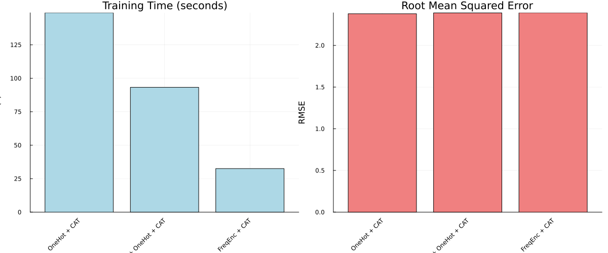

Wine Quality Prediction: Comparing Categorical Encoders
Julia version is assumed to be 1.10.*
This demonstration is available as a Jupyter notebook or julia script (as well as the dataset) here.
This tutorial compares different categorical encoding approaches on wine quality prediction. We'll test OneHot, Frequency, and Cardinality Reduction encoders with CatBoost regression.
Why compare encoders? Categorical variables with many levels (like wine varieties) can create high-dimensional sparse features. Different encoding strategies handle this challenge differently, affecting both model performance and training speed.
Note: we do not endorse drinking alcohol, this tutorial is purely for educational purposes.
using Pkg;
Pkg.activate(@__DIR__);
using MLJ, MLJTransforms, DataFrames, ScientificTypes
using Random, CSV, StatsBase, Plots; Activating project at `~/Documents/GitHub/MLJTransforms/docs/src/tutorials/wine_example`
Load and Prepare Data
Load the wine dataset and take a sample for faster computation. The dataset contains wine reviews with categorical features like variety, winery, and region:
df = CSV.read("./clean_wine.csv", DataFrame)
first(df, 5)| Row | country | points | price | province | region_1 | region_2 | variety | winery |
|---|---|---|---|---|---|---|---|---|
| String3 | Int64 | Float64 | String15 | String | String31 | String | String | |
| 1 | US | 87 | 14.0 | Oregon | Willamette Valley | Willamette Valley | Pinot Gris | Rainstorm |
| 2 | US | 87 | 65.0 | Oregon | Willamette Valley | Willamette Valley | Pinot Noir | Sweet Cheeks |
| 3 | US | 87 | 19.0 | California | Napa Valley | Napa | Cabernet Sauvignon | Kirkland Signature |
| 4 | US | 87 | 34.0 | California | Alexander Valley | Sonoma | Cabernet Sauvignon | Louis M. Martini |
| 5 | US | 87 | 12.0 | California | Central Coast | Central Coast | Chardonnay | Mirassou |
Sample 10,000 rows for faster computation (the full dataset is quite large):
df = df[sample(1:nrow(df), 10000, replace = false), :];Coerce categorical columns to appropriate scientific types. We use autotype to automatically detect categorical features by recognizing columns with few unique values:
df = coerce(df, autotype(df, :few_to_finite));
df = coerce(df, :points => Continuous, :region_1 => Multiclass,
:variety => Multiclass, :winery => Multiclass);Split Data
Separate features (X) from target (y), then split into train/test sets:
y, X = unpack(df, ==(:points); rng = 123);
train, test = partition(eachindex(y), 0.8, shuffle = true, rng = 100);Setup Encoders and Model
Load the required models and create different encoding strategies:
OneHot = @load OneHotEncoder pkg = MLJModels verbosity = 0
CatBoostRegressor = @load CatBoostRegressor pkg = CatBoostCatBoost.MLJCatBoostInterface.CatBoostRegressorEncoding Strategies:
- OneHotEncoder: Creates binary columns for each category
- FrequencyEncoder: Replaces categories with their frequency counts
In case of the one-hot-encoder, we worry when categories have high cardinality as that would lead to an explosion in the number of features.
card_reducer = MLJTransforms.CardinalityReducer(min_frequency = 10, ordered_factor = true)
onehot_model = OneHot(drop_last = true, ordered_factor = true)
freq_model = MLJTransforms.FrequencyEncoder(normalize = false, ordered_factor = true)
cat = CatBoostRegressor();Create three different pipelines to compare:
pipelines = [
("CardRed + OneHot + CAT", card_reducer |> onehot_model |> cat),
("OneHot + CAT", onehot_model |> cat),
("FreqEnc + CAT", freq_model |> cat),
]3-element Vector{Tuple{String, MLJBase.DeterministicPipeline{N, MLJModelInterface.predict} where N<:NamedTuple}}:
("CardRed + OneHot + CAT", DeterministicPipeline(cardinality_reducer = CardinalityReducer(features = Symbol[], …), …))
("OneHot + CAT", DeterministicPipeline(one_hot_encoder = OneHotEncoder(features = Symbol[], …), …))
("FreqEnc + CAT", DeterministicPipeline(frequency_encoder = FrequencyEncoder(features = Symbol[], …), …))Evaluate Pipelines
Train each pipeline and measure both performance (RMSE) and training time:
results = DataFrame(pipeline = String[], rmse = Float64[], training_time = Float64[]);
for (name, pipe) in pipelines
println("Training: $name")
mach = machine(pipe, X, y)
training_time = @elapsed MLJ.fit!(mach, rows = train)
predictions = MLJ.predict(mach, rows = test)
rmse_value = MLJ.root_mean_squared_error(y[test], predictions)
push!(results, (name, rmse_value, training_time))
endTraining: CardRed + OneHot + CAT
[ Info: Training machine(DeterministicPipeline(cardinality_reducer = CardinalityReducer(features = Symbol[], …), …), …).
[ Info: Training machine(:cardinality_reducer, …).
[ Info: Training machine(:one_hot_encoder, …).
[ Info: Spawning 0 sub-features to one-hot encode feature :country.
[ Info: Spawning 3 sub-features to one-hot encode feature :province.
[ Info: Spawning 88 sub-features to one-hot encode feature :region_1.
[ Info: Spawning 16 sub-features to one-hot encode feature :region_2.
[ Info: Spawning 48 sub-features to one-hot encode feature :variety.
[ Info: Spawning 408 sub-features to one-hot encode feature :winery.
[ Info: Training machine(:cat_boost_regressor, …).
Training: OneHot + CAT
[ Info: Training machine(DeterministicPipeline(one_hot_encoder = OneHotEncoder(features = Symbol[], …), …), …).
[ Info: Training machine(:one_hot_encoder, …).
[ Info: Spawning 0 sub-features to one-hot encode feature :country.
[ Info: Spawning 3 sub-features to one-hot encode feature :province.
[ Info: Spawning 157 sub-features to one-hot encode feature :region_1.
[ Info: Spawning 16 sub-features to one-hot encode feature :region_2.
[ Info: Spawning 148 sub-features to one-hot encode feature :variety.
[ Info: Spawning 2986 sub-features to one-hot encode feature :winery.
[ Info: Training machine(:cat_boost_regressor, …).
Training: FreqEnc + CAT
[ Info: Training machine(DeterministicPipeline(frequency_encoder = FrequencyEncoder(features = Symbol[], …), …), …).
[ Info: Training machine(:frequency_encoder, …).
[ Info: Training machine(:cat_boost_regressor, …).
Sort by RMSE (lower is better) and display results:
sort!(results, :rmse)
results| Row | pipeline | rmse | training_time |
|---|---|---|---|
| String | Float64 | Float64 | |
| 1 | OneHot + CAT | 2.3801 | 148.974 |
| 2 | CardRed + OneHot + CAT | 2.38979 | 93.2509 |
| 3 | FreqEnc + CAT | 2.39178 | 32.5362 |
Visualization
Create side-by-side bar charts to compare both training time and model performance:
n = nrow(results)
time_plot = bar(1:n, results.training_time;
xticks = (1:n, results.pipeline), title = "Training Time (seconds)",
xlabel = "Pipeline", ylabel = "Time (s)", xrotation = 45,
legend = false, color = :lightblue);
rmse_plot = bar(1:n, results.rmse;
xticks = (1:n, results.pipeline), title = "Root Mean Squared Error",
xlabel = "Pipeline", ylabel = "RMSE", xrotation = 45,
legend = false, color = :lightcoral);
combined_plot = plot(time_plot, rmse_plot; layout = (1, 2), size = (1200, 500));Save the plot

Conclusion
Key Findings:
- The model performance did not vary significantly across encoding strategies.
- We observe a decent speed up in using the cardinality reducer before one-hot encoding with close to no impact on performance.
- That said, frequency encoder led to the least training time as it didn't add any new features
This page was generated using Literate.jl.